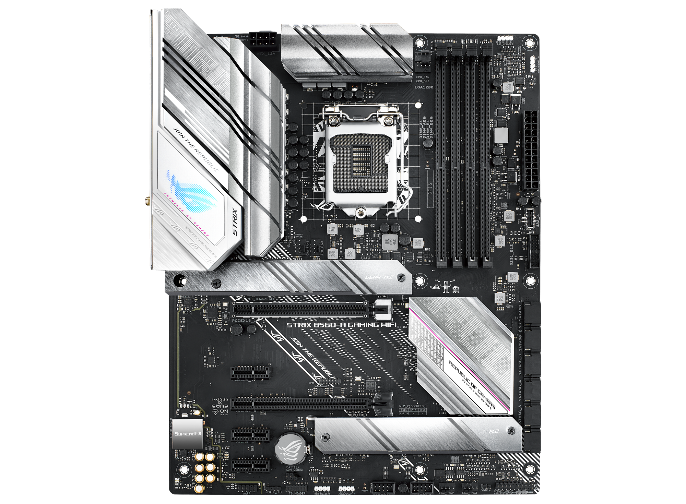
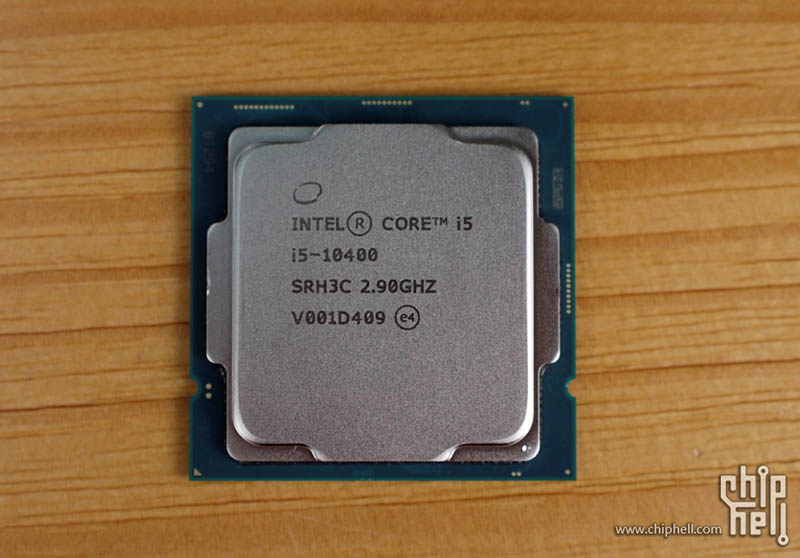
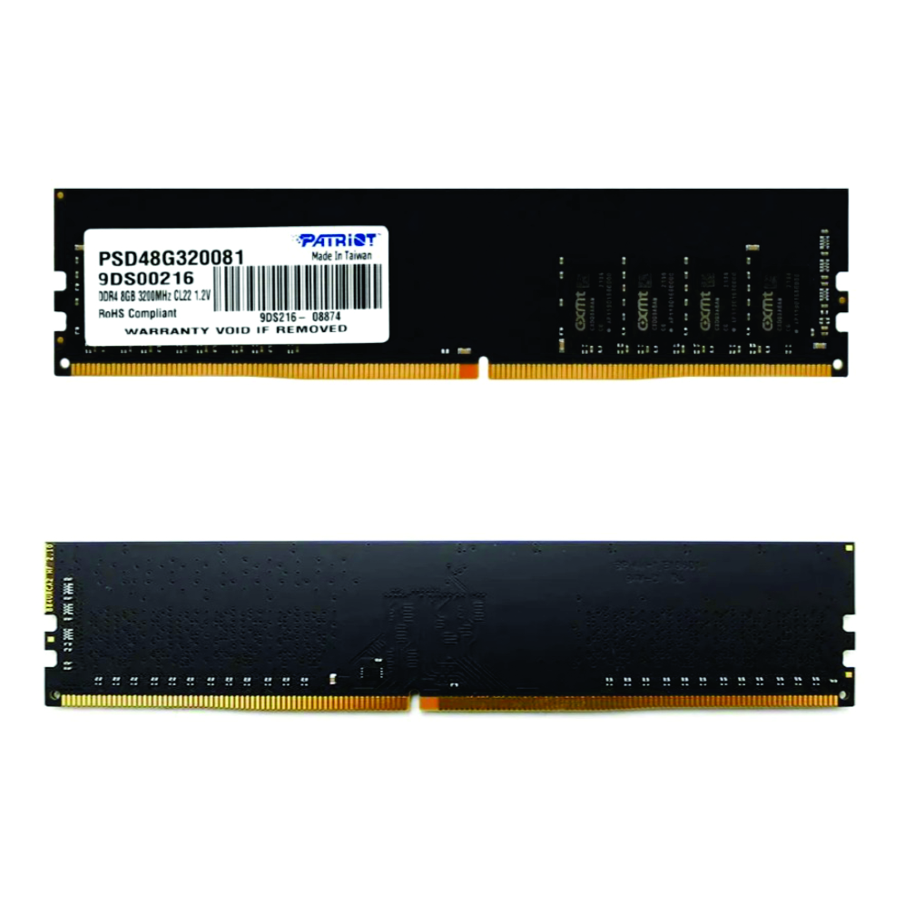

Bitácora de Laboratorio 2026
Tamara Piccinni - Docente - 5to Año
Arquitectura y Componentes (PC Tamy)
Ver Ficha Técnica Completa
Placa Madre
Modelo: ASUS STRIX B560-A GAMING WIFI

Microprocesador
Modelo: Intel(R) Core(TM) i5-10400 CPU @ 2.90GHz
Arquitectura: 64 bits, x64

Memoria RAM
Capacidad: 16.0 GB DDR4

Tarjeta Gráfica (GPU)
Modelo: [Ej: Gráficos Integrados Intel UHD 630]

Almacenamiento
Tipo: SSD NVMe M.2 / HDD SATA

Fuente de Alimentación (PSU)
Potencia: [Ej: 600W 80 Plus Bronze]

Sistema de Refrigeración
Tipo: Disipador por aire / Refrigeración Líquida

Gabinete (Chasis)
Formato: Mid Tower ATX
Periféricos y Dispositivos E/S
Interfaces físicas de comunicación con el usuario.

Monitor (Salida)
Resolución: 1920x1080 (Full HD) a 75Hz

Teclado y Mouse (Entrada)
Conectividad: USB / Inalámbrico 2.4GHz

Auriculares (Salida/Entrada)
Modelo: Logitech Zone Vibe 125
Conectividad: Receptor USB-A / Bluetooth
Base de Datos de Conocimiento
Acceso al informe técnico sobre funcionamiento de componentes, arquitectura de buses y resolución de cuellos de botella (Bottlenecks).
Leer Informe Completo de Arquitectura
Simulación de Ensamblaje y Presupuestos
Documentación técnica de presupuestos redactada bajo normas APA.
PC Gaming (Presupuesto Libre)
Enfoque en máximo rendimiento gráfico y sistemas de refrigeración avanzados.
Ver Informe APAPC Oficina (Presupuesto Limitado)
Enfoque en ofimática, durabilidad y mejor relación costo-beneficio.
Ver Informe APALaboratorio: Diagnóstico y Mantenimiento
Documentación técnica de los procedimientos realizados en el entorno de pruebas.
Ficha Práctica de Hardware
Reconocimiento visual e inspección de componentes internos en equipos de descarte.
Ver Ficha CompletadaManual del Técnico
Protocolos de diagnóstico, desarme, uso del multímetro y recuperación de datos (Dongle).
Leer Manual de Protocolos
Soldadura y Recuperación
Prácticas de desoldadura de componentes y reparación de pistas en placas base averiadas.
Base de Datos de Conocimiento (Teoría)
Acceso al informe técnico completo sobre funcionamiento interno, arquitectura de componentes y resolución de cuellos de botella.
Descargar/Ver PDF Teórico Completo
Prácticas de Laboratorio Extra
Soldadura y Desoldadura
Recuperación de componentes electrónicos y reparación de pistas en placas de descarte.
Proyectos Arduino e IoT
Aplicación práctica de programación en C++ y electrónica para resolver problemas del mundo real.

Lentes Asistenciales
Hardware: Microcontrolador ESP32, Sensor Ultrasónico, Buzzer.
Lógica: Detección de proximidad y emisión de alertas sonoras.
Ver Código y Circuito
Basurero Inteligente
Hardware: Placa Arduino, Servomotor, Sensor de Proximidad.
Lógica: Apertura automática del contenedor mediante detección de movimiento.
Ver Código y Circuito